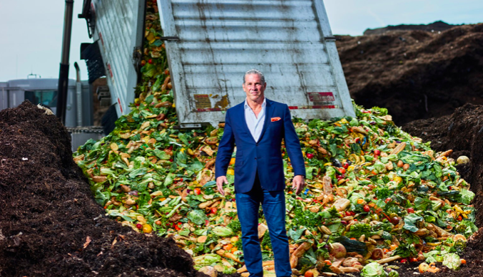
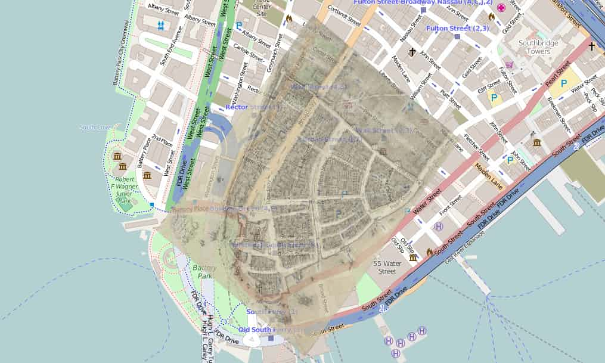

Waste Management
Articles
Take Action
6 Things You're Recycling Wrong: Livia Albeck-Ripka
The New York Times
1
The Compost King of New York: Elizabeth Royte

The New York Times
2
What does New York do with all its trash? One city's waste – in numbers: Max Galka

The Guardian
3
Trash as Value: Turning Ocean Waste Into Viable Products: Heather Caliendo
Plastics Technology
4